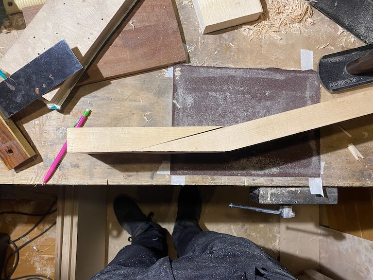
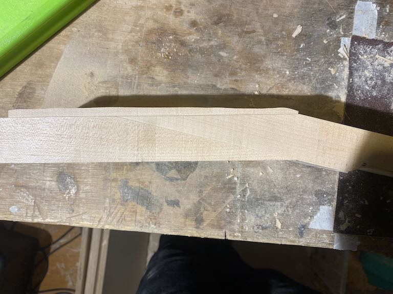
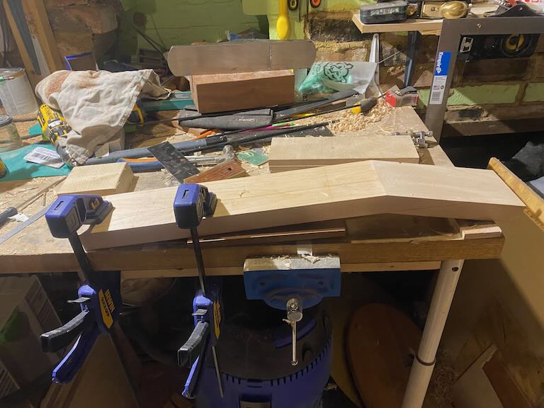
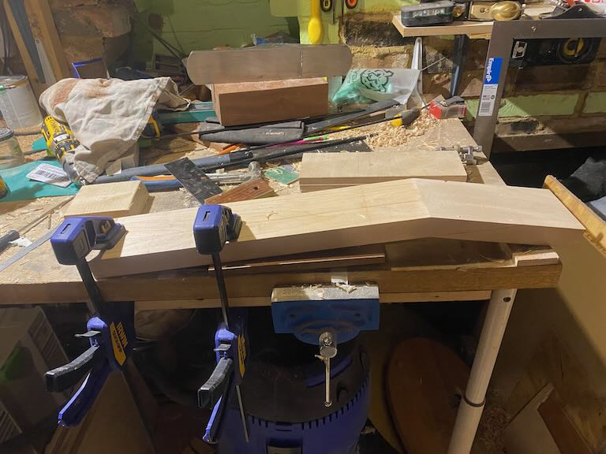
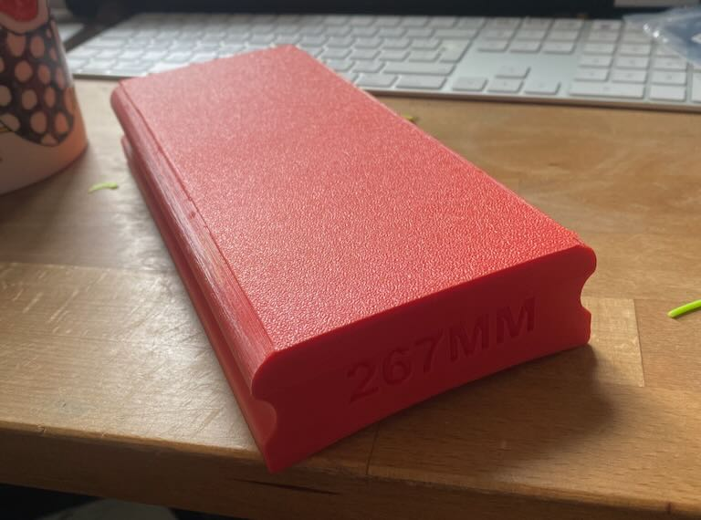
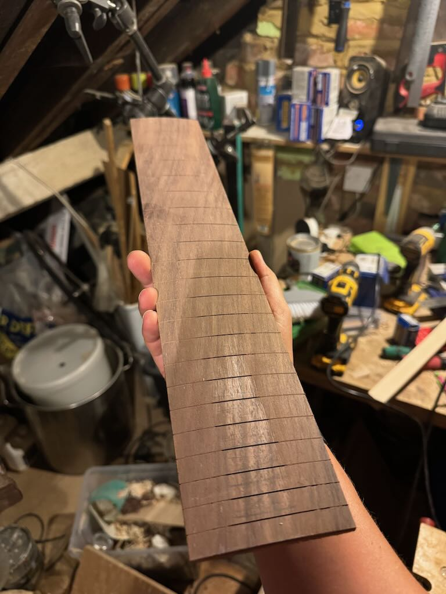
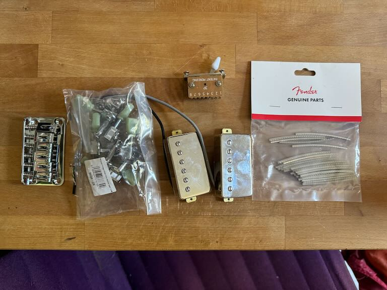
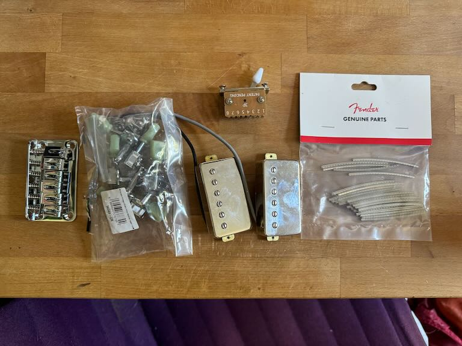

CUSTOM GUITAR: JOHN MOSHER
WORK IN PROGRESS - last updated 25/06/24
Sorry for the slow update! Took me a while to find all the materials but I think I have pretty much everything now. I've mostly been working on the neck which is always the lion's share of the work.
Neck
Neck is made in 3 parts, its a scarf joint which is traditional for a les paul, but with an extra laminate on top to hide the joint from the front as we're going for a clear finish  Gluing the first bit this is the front maple laminate  and gluing it on - you can see that the front surface is not flat yet Planing the front surface of the head flat and square

The neck gets roughly bandsawed out then routed very accurately
(not pictured is the routing of th truss rod and carbon fibre
reinforcement channels)
Planing the front surface of the head flat and square

The neck gets roughly bandsawed out then routed very accurately
(not pictured is the routing of th truss rod and carbon fibre
reinforcement channels)

Head
To make the head shape perfectly accurate I 3d printed a template to rout around with a template bit After routing (and a better template)
After routing (and a better template)
 Roughing out the volute on the back of the neck to make it
super comfortable to play
Roughing out the volute on the back of the neck to make it
super comfortable to play
 final neck before gluing the fretboard and carving the
back
final neck before gluing the fretboard and carving the
back

Fretboard
3d printed sanding block to make sure the radius is perfectly 10.5 inches.  Fretboard after most of the sanding that needs to be done  rough cut the perloid slowly sanding back to the scalpel lines to ensure tiny
tolerances for inlay
slowly sanding back to the scalpel lines to ensure tiny
tolerances for inlay

Body
Made a plywood template for the body for rough bandsawing followed by precision routing roughed out on bandsaw - leaving the area around the neck
pocket as you don't want to do that until neck reaches its final
dimensions to ensure a snug fit.
roughed out on bandsaw - leaving the area around the neck
pocket as you don't want to do that until neck reaches its final
dimensions to ensure a snug fit.
 Most of the hardware

Most of the hardware

(design draft doc)